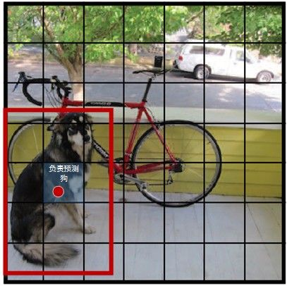
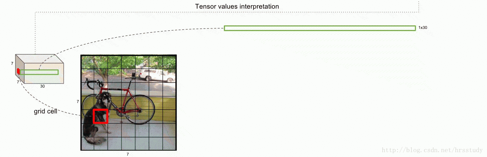
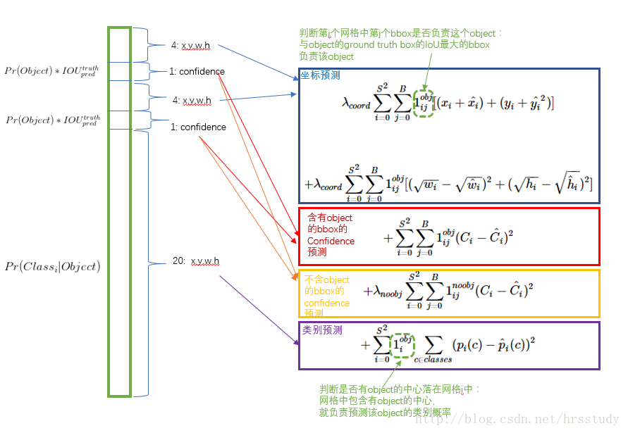
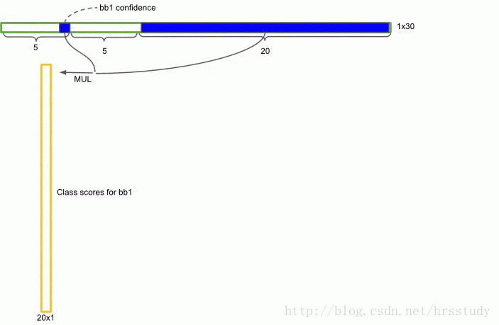
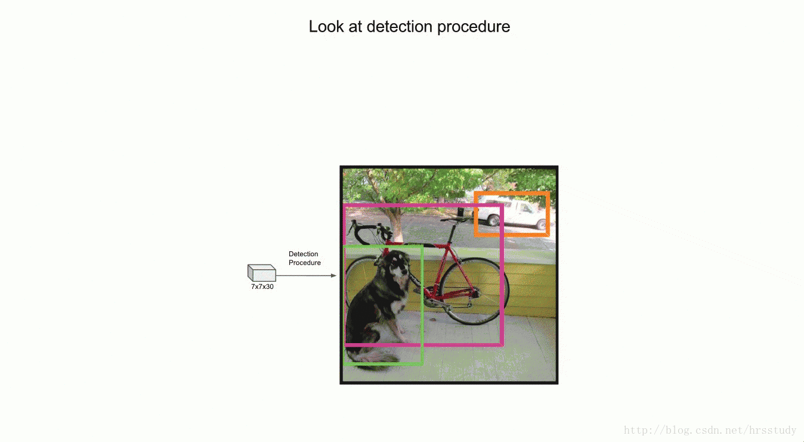
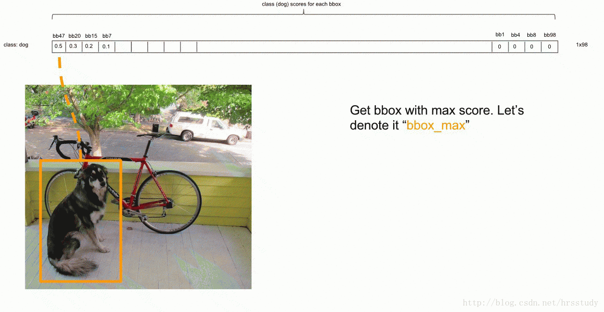
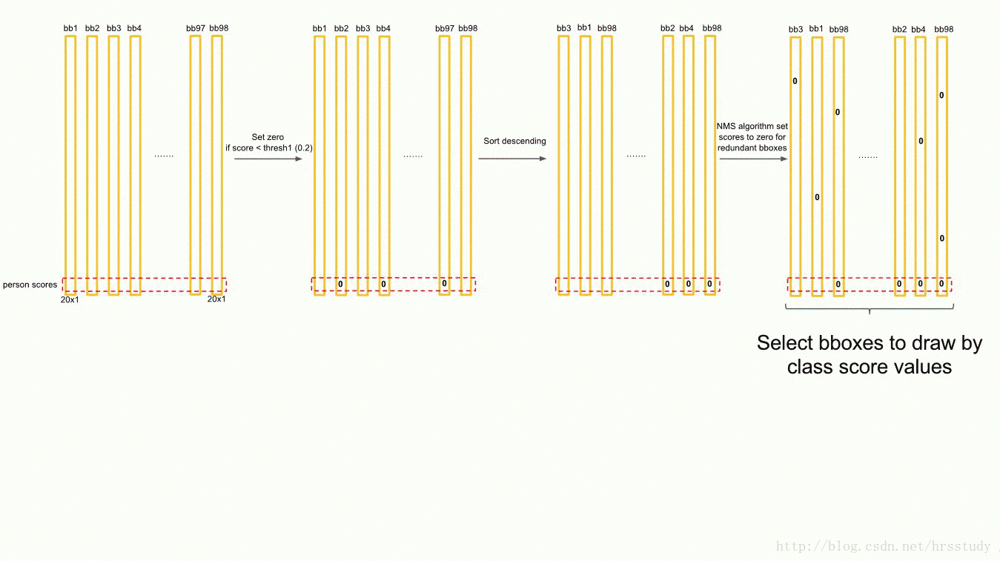

本文针对 Yolo v1 的一些处理方法和细节给出了自己的理解。不一定正确，如有错误请指正。
Yolo 整体思想
YOLO 将输入图像分成 SxS 个格子，每个格子负责检测‘落入’该格子的物体。若某个物体的中心位置的坐标落入到某个格子，那么这个格子就负责检测出这个物体。如下图所示，图中物体狗的中心点（红色原点）落入第5行、第2列的格子内，所以这个格子负责预测图像中的物体-狗。

在计算 loss 时，此格子预测得到的 B 个 bounding box 分别与‘狗’这个物体的 gt box（即图中的红色框）计算 IoU，用 IoU 较大的 bounding box 来计算 localization 损失（称这个 bnd box 负责检测这个物体 --‘狗’），剩下的 bnd box 不参与计算。这边所讨论的是有物体的格子计算损失的方式，没有物体的格子的损失计算与之稍有不同。
具体见损失函数。Yolo输出特征图
根据论文中的参数，Yolo 网络的输出为 7×7×30，每一个格子对一个一个 30 维的向量。这个 30 维向量的含义如下图所示。

如图所示，x,y 分别是预测出的 bnd box 的中心相对于当前格子的边界的坐标值。其被格子的尺寸归一化到了[0,1]。也就是说，预测出的 bnd box 的中心是在格子内部的。w,h 是预测出的 bnd box 的长宽，其被图像尺寸归一化到了[0,1]。也就是说，预测出的 bnd box 的尺寸是不大于图像尺寸的任意尺寸。confidence 就是预测出的 bnd box 和 gt box的 IoU 值。
损失函数
网络的损失函数定义如下图：

从图中可以看出，损失函数主要分为【坐标预测】【confidence】【类别预测】三个部分。是计算出每一个格子的损失并将所有格子的损失加和作为最后的损失值。由于格子主要分为 【有物体】和【无物体】两种，因此对不同类型的格子，损失的计算方式不完全一样。对于有物体的格子，由于每个格子预测了两个bnd box，因此计算这两个 bnd box 和当前格子对应物体的 GT box 的 IoU，用 IoU 值大的 bnd box 来负责这个 GT box 的预测（也就是回归），也就是说，只计算 IoU 较大的 bnd box 的损失，不计算其他 bnd box 的损失。 $\mathbb{1}^{obj}_{i}$ 表示第$i$个格子中是否有物体出现，若有，则为1，否则为0。$\mathbb{1}^{obj}_{ij}$表示第$i$个格子中的第$j$个 bnd box 是否负责当前格子所对应 GT box 的预测。个人理解，当格子中没有物体，即 $\mathbb{1}^{obj}_i=0$ 时，对任何$j$，$\mathbb{1}^{obj}_{ij}$都为 0。因此，对于没有物体的格子来说，此格子对损失函数的贡献只有 这一项，而其他的如分类误差和定位误差都为0。
Ground Truth设定
Yolo 的网络输出为 7×7×30 的 feature map，为了能够构造损失函数，因此需要一个同样尺寸的 Ground Truth。针对每一个格子，它的 Ground Truth 也为一个 30 维的向量。其中 20 维为这个格子所对应的物体的类别，个人理解为 one hot。剩下10维为两个 bnd box 的 GT ，两个 bnd box 的 GT 值相同，即两个相同的 5 维向量。5 维向量分别为当前格子对应的物体的 w,h,x,y,confidence。对于有物体的格子，w,h,x,y 为格子对应物体的 GT box 的这四项参数，confidence 项为 1。对于没有物体的格子, confidence 项为 0，且在计算损失时，不计算当前格子预测出的两个 bnd box 的定位损失（$\mathbb{1}^{obj}_{ij}=0$）和分类损失（$\mathbb{1}^{obj}_{i}=0$），因此没有物体的格子的 Ground Truth 中的 w,h,x,y 并不重要，因为它们不参与计算。这样，如上节所讲，没有物体的格子对损失函数的贡献只有 这一项。
Inference流程
前面讲到，每一个格子最后会得到一个 30 维的向量，其中 10 维分别为两个 bnd box 预测的 w,h,x,y,confidence 值，20 维为此格子的条件类别概率 $Pr(Class_i|Object)$。将两个 bnd box 预测的 confidence 分别和这个条件类别概率相乘，则得到两个 20 维的向量，称作 confidence score，它既包含了 bounding box 中预测的 class 的 probability 信息，也反映了 bounding box 是否含有 Object 和 bounding box 坐标的准确度。这样，对每一个格子，都得到两个 20 维的 score 向量。如下图。

这里我有一个疑问：前面的 score 向量是最后用来比较的标准，即判断每个 bnd box 好坏的标准，但是这里并没有用到 w,h,x,y 四个预测坐标来计算与 GT box 的 IoU。我的解释是：在训练阶段，w,h,x,y 和 confidence 是绑定的，即预测的 bnd box 的 w,h,x,y 向真实值靠近(针对有物体的格子)，confidence 向 1 靠近，因此，当 confidence 较接近 1 时，说明 w,h,x,y 四个值也接近真实值。这样在预测阶段，就不用把 w,h,x,y 拿出来计算，直接拿预测的 confidence 计算，就可以表达 bnd box 是否很好地预测了 GT box 的坐标。
得到score向量后的流程
在得到每个 bnd box 的 score 向量后（论文中共有 2×7×7=98 个），将其看作一个 20×98 的矩阵。其中每一列为每个 bnd box 的 score 向量，每一行为每个 bnd box 对某个类别的预测 score。针对此矩阵，逐行，即逐类别进行操作。
- 对某一行（假设第一行，即第一类）的 98 个 score 值进行阈值化，将小于固定阈值的 score 值置零。
- 根据此行阈值化后的 score 值的大小，对每个 bnd box 的 score 向量（列与列进行排序，不是列的元素排序）进行降序排序。
- 降序排序后，根据此行的 98 个 score 值以及预测出的 98 对 $(w,h,x,y)$ 进行 NMS，将此行部分 bnd box 的 score 值置零 (见 NMS 的具体方式图)。
- 对每一行（即每个类别）重复上述三个步骤，这样就得到一个全新的 20×98 的矩阵，其中有大量 0 元素。
- 对新矩阵的每一列（每一个 bnd box），找出其 score 值最大的类别，若其最大 score 值大于 0，则用此类别对应的颜色画出当前 bnd box 预测的框。
其中，阈值化-降序排序-NMS 流程如下图所示：

NMS 的具体方式如下图所示：

从新矩阵中画出检测框的过程如下图所示：

Yolo 的缺点
- localization error 较大，定位不准确
- recall rate 较低 (由于每个格子内只预测 B 个 bnd box，因此当有多个物体的中心落入同一个格子时，Yolo 是无法检出的，因此 Yolo 对成群出现的小物体检测效果很差)
参考文章
https://blog.csdn.net/hrsstudy/article/details/70305791
论文原文 https://arxiv.org/abs/1506.02640